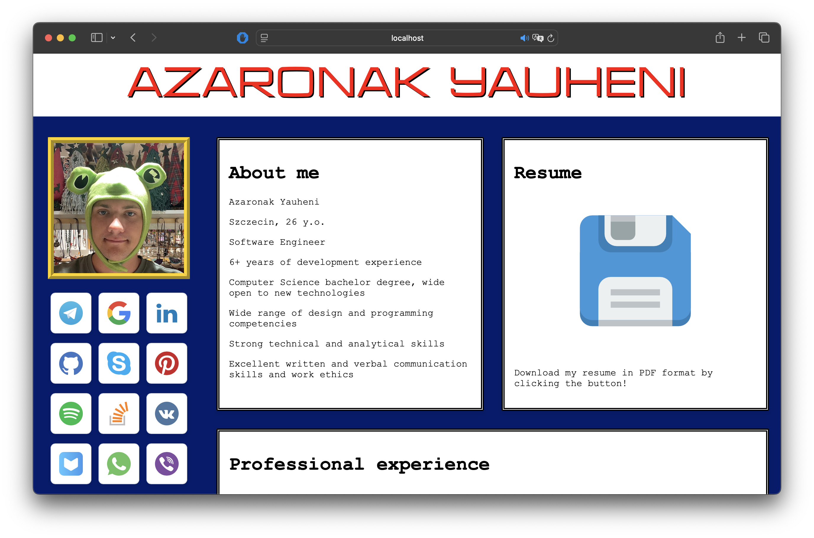
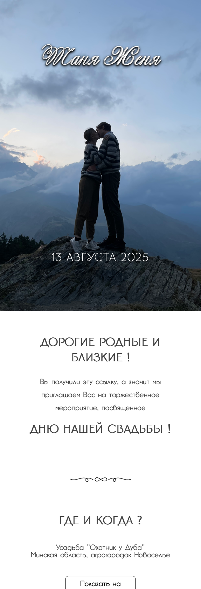
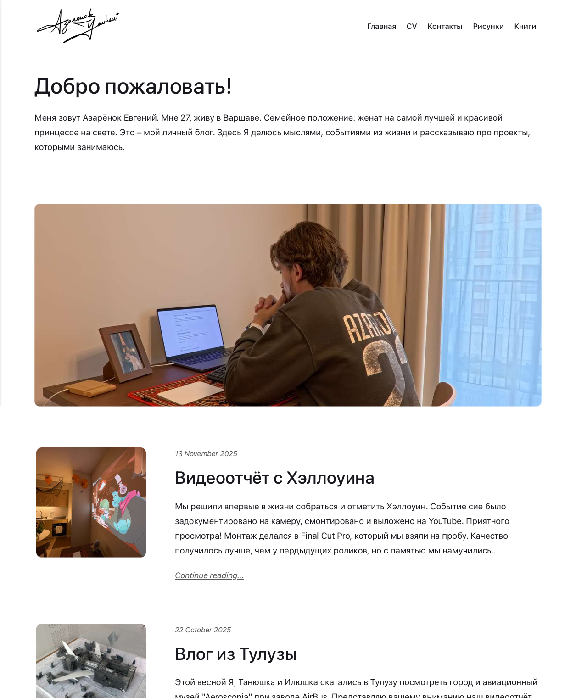

Случайный посетитель может задаться вопросом: какого хрена? Почему он выглядит как чей-то веб-проект из старших классов?
Короткий ответ:
Это мой сайт и он нравится мне таким.
Длинный ответ:
Я стал набрасывать черновик от скуки, когда просиживал штаны на бесполезных митингах на своей старой работе. Он был, есть и навсегда останется собранием штук, которые Я нахожу забавными и интересными. Вёрстка, цвета, анимации – делая всё это руками Я вспоминаю радость создания, которую испытывал впервые заставив программу работать как задумано. Я нахожу полезным время от времени позаниматься чем-то только для себя, ради веселья, без мыслей о полезности, производительности или прибыльности.
У него есть история. Родившись от скуки он сначала заполнился контактной информацией. Чуть позже туда перехало моё резюме – Я посчитал, что будет круто вместо PDF-файла кидать ссылку на сайт и ещё круче, если иметь доменное имя буквально повторяющее мою фамилию. Такой домен Я купил и с горем пополам прикрутил к хосту. Сайт был онлайн и крутился сам по себе. Я вставил ссылки на него во все свои релевантные ресурсы не меняя при этом вёрстки, она осталась всё такой же всратой.

Мне лично одинаково импонируют как аккуратные, минималистичные и солидные сайты, так и намеренные всратышы, памятники ушедшей эре, в которой у каждого жителя сети был свой уголок, который они могли обустроить как им хотелось.
Моё знакомство с сетью пришлось на время, когда социальные сети уже существовали. Тогда это ещё были стартапы, чьи-то частные начинания, пробы пера и эксперименты. Не было миллиардных инвестиций, не было подлых манипуляций пользвательским вниманием, не было анальной цезуры и повсеместных радикализирующих псиопов. Короче говоря, соцсети были логичным шагом от примитивного веб-дизайна и если бы не вышеперечисленные проблемы Я, может быть, никогда бы и не заинтересовался достаточно идеей обладания своей страничкой.
Через какое-то время мы с моей невестой решили пожениться и заменить моё уютно оформленное, но плюс-минус бесполезное резюме на веб-приглашение, которое Я вызвался написать чтобы сэкономить на дизайнере. Получилось, по моей скромной оценке, очень даже прилично:

Аккуратный внешний вид нашего свадебного приглашения толкнул меня на скользкий путь отречения от рукописной версии сайта. Свадьба прошла, пришло время возвращать резюме обратно. Я решил попробовать какой-нибудь из модных современных систем управления контентом, которые взяли бы на себя всё управление, а мне оставалось бы только публиковать посты.
Так всё и получилось. Я выбрал самый удобный, бесплатный опенсорсный движок, прикрутил с нему свой хостинг с доменом и стал постить. Было и вправду удобно – каждый раз, когда Я хотел что-то написать Я просто писал и постил. Неожиданным подводным камнем стал новый, почти официальный внешний вид сайта и очень редкие мои мысли отправлялись туда из-за страха несоответствовать. Я постил всё реже и реже и в конце концов перестал. Вместо этого Я прикручивал комментарии с помощью плагинов и встраивал аналитические метрики.

Однажды мне захотелось добавить страничку с книгами, которые Я прочитал и короткими рецензиями на них и оказалось, что единственным способом сделать это было добавление их в качестве обычных постов. Это была соломинка, переломившая спину верблюда.
Какие посты? Какие комментарии? Какие, нахрен, метрики? Это должен был быть мой сайт! Да насрать мне на комментарии с высокой колокольни! (без обид) И уж тем более мне насрать на метрики! Этот мир измерения посещаемости и активности не для меня. Я ничего не продаю и ни на кого не влияю, Я просто хочу иметь свой уголок в Интернете, где можно было бы делать что Я хочу и не стесняться себя! Я снёс к чёртовой матери весь движок и начал с начала.
Так сайт пришёл к тому виду, в котором он находится сейчас. Он простенький, местами кривенький, всратенький, но мой, личный. Я целиком сделал его руками, получал и продолжаю получать удовольствие работая над ним каждый раз и больше не боюсь не соответствовать его форме, потому что создаю её сам.